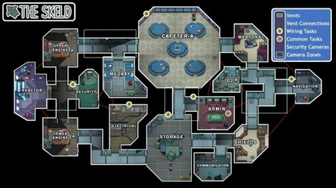

Mapas
The Sked

Descripción General:
- Ambientación: The Skeld es una nave espacial que los jugadores exploran mientras intentan completar sus tareas o engañar a otros. El diseño es futurista y se caracteriza por una disposición compacta de habitaciones interconectadas.
- Número de Jugadores: Puede albergar de 4 a 10 jugadores.
- Medbay:
- Aquí se pueden realizar tareas como el escaneo del jugador (Scan).
- Incluye un área de observación para ver a los jugadores realizar el escaneo.
- Cafetería:
- Es el centro social de la nave.
- Los jugadores pueden encontrar comida y realizar tareas como la recolección de tareas o activar un sabotaje.
- Administración:
- Muestra un mapa de la nave, permitiendo a los jugadores ver dónde están los demás en tiempo real.
- Los jugadores pueden ver quién está en qué habitación y realizar tareas relacionadas con el sistema administrativo.
- Electrical:
- Es una habitación donde los jugadores realizan tareas como arreglar el cableado y restablecer la energía.
- Esta área es conocida por ser un lugar peligroso para los tripulantes, ya que es donde muchos asesinatos ocurren.
- Reactor:
- Es un área crítica que necesita ser mantenida por los tripulantes.
- Los jugadores deben completar tareas relacionadas con la energía y resolver crisis, como las de fusión nuclear.
- Oxygen:
- Los impostores pueden sabotear el suministro de oxígeno, obligando a los tripulantes a repararlo.
- Incluye tareas de calibración y control de oxígeno.
- Navigation:
- En esta sala, los jugadores pueden realizar tareas de navegación y ajustar el rumbo de la nave.
- Los tripulantes deben mantener la nave en el curso correcto.
- Security:
- Los jugadores pueden usar cámaras de seguridad para vigilar otras habitaciones.
- Es un lugar clave para identificar comportamientos sospechosos.
- Hallways (Pasillos):
- Conectan las diversas habitaciones, permitiendo el movimiento entre ellas.
- Los pasillos son lugares donde los impostores pueden acechar a los tripulantes.
Mira HQ


Descripción General:
- Ambientación: Mira HQ es una base de investigación situada en la superficie de un planeta, con un diseño más moderno y futurista en comparación con The Skeld. Su aspecto es más espacioso, con varias áreas al aire libre.
- Número de Jugadores: Puede albergar de 4 a 10 jugadores.
- Medbay:
- Similar al de The Skeld, aquí los jugadores pueden realizar el escaneo (Scan) y otras tareas relacionadas con la salud.
- Incluye una tarea donde los jugadores pueden usar el escáner para verificar su estado.
- Cafetería:
- Este es el área social y de descanso, donde los jugadores pueden llevar a cabo tareas.
- Se pueden encontrar mesas y sillas, así como un dispensador de comida.
- Administración:
- Permite a los jugadores ver el mapa de la base y dónde están los demás jugadores.
- Es útil para monitorear la actividad en diferentes áreas.
- Electrical:
- Aquí se pueden realizar tareas de electricidad, como reparar cables y restablecer la energía.
- Al igual que en The Skeld, es un lugar donde los impostores suelen atacar.
- Comms:
- Esta habitación permite a los jugadores completar tareas relacionadas con la comunicación.
- Si es sabotada, los jugadores no pueden ver el mapa ni realizar ciertas acciones.
- O2:
- Similiar a la sala de oxígeno en The Skeld , aqui los jugadores pueden completar tareas relacionadas con el oxígeno
- Los impostores pueden sabotear esta sala para obligar a los tripulantes a resolver la crisis
- Laboratory:
- Es un area de investigación dond los jugadores pueden completar tareas relacionados con la ciencia
- Incluye el uso del telescopio para resolver los astros.
- Reactor:
- También presenta tareas de mantenimiento de energía, como en The Skedl, pero con un diñeño diferente.
- Se requiere colaboración de los tripulantes para resolver el sabotaje.
- Outside(Exterior):
- Esta es una área exterior que conecta algunas habitaciones y es un lugar donde los jugadores pueden ser más vunerables a los ataques.
- Aquí no hay tareas, pero sirve como punto de conexión entre las habitaciones